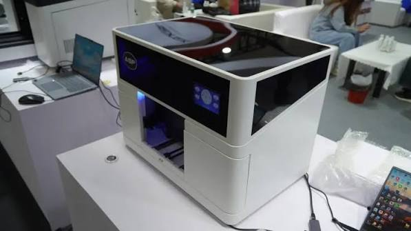
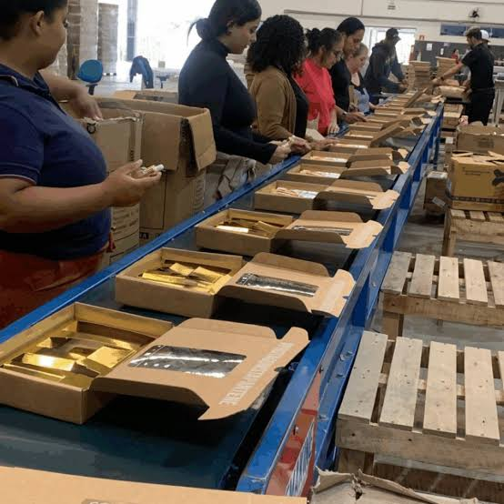

História dos objetos promocionais e comemorativos
Distingue objetos oferecidos, comemorativos, de identificação e promocionais sem lhes atribuir uma origem única.
Ler o guia →Guias para compreender a história dos objetos oferecidos e promocionais, os equipamentos e as operações que podem participar na sua produção, e as fases que podem anteceder a entrega.
Os artigos explicam princípios e decisões gerais. Não descrevem a operação de uma empresa específica nem estabelecem compatibilidade universal. Para comparar métodos de personalização, consulte também Técnicas.
Distingue objetos oferecidos, comemorativos, de identificação e promocionais sem lhes atribuir uma origem única.
Ler o guia →
Acompanha decisões possíveis desde definir o objetivo até organizar a entrega.
Ler o guia →
Compara por alto operações de impressão, processos têxteis, corte, montagem e acabamento.
Ler o guia →
Explica montagem, inspeção, acondicionamento, expedição e entrega sem pressupor um fluxo universal.
Ler o guia →Processos que aplicam ou alteram uma imagem na superfície, com requisitos próprios de equipamento e preparação.
Como cliché, tinta e tampão transferem uma imagem para superfícies cuja forma exige avaliação.
IndústriaA tela, o stencil, o rodo e o suporte formam o conjunto básico da impressão serigráfica.
IndústriaDistinga gravação, marcação e corte; a composição do material e a segurança têm de ser confirmadas.
IndústriaImpressão UV direta e UV DTF são processos distintos, com formas diferentes de aplicar a imagem.
IndústriaO DTF transfere uma imagem preparada num filme; as condições de aplicação dependem do sistema e do artigo.
IndústriaA sublimação por transferência depende do corante e de um suporte preparado para o processo.
IndústriaÂmbito e funcionamento geral das prensas usadas para montar crachás tipo pin ou emblemas.
Bordado decorativo e costura estrutural são operações diferentes; cada uma depende da construção do artigo.
Operações para preparar formas, reunir componentes e finalizar conjuntos.
O equipamento e a ferramenta definem cortes, vincos e perfurações; estas operações têm funções diferentes.
IndústriaCompare sistemas adesivos, costurados e mecânicos sem os tratar como equivalentes.
IndústriaComo organizar a junção de componentes, a revisão de conjuntos e a preparação para apresentação.
IndústriaOperações distintas que podem decorrer depois da personalização e antes da entrega no destino indicado.